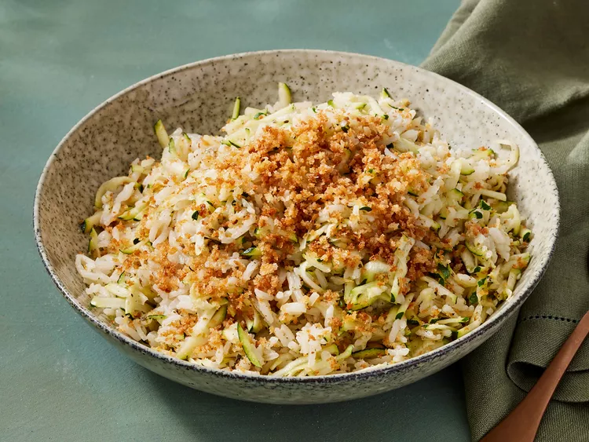

Cheesy Zucchini Rice

Try this cheesy zucchini rice, similar to risotto, but with much less effort. An easy recipe especially if you have an abundance of zucchini.
This cheesy zucchini rice recipe tastes a bit like a fancy risotto, according to recipe developer Juliana Hale, but it’s much less work. Plus, it’s a great way to use up excess produce and sneak in some greens!
Ingredients
- 2 to 3 tablespoons butter, softened
- 1/4 cup panko bread crumbs (optional)
- 2 cups lower sodium chicken broth
- 1 cup long grain white rice
- 1/2 teaspoon salt
- 1 pinch cayenne pepper
- 2 cups shredded zucchini
- 3/4 cups shredded Gruyere cheese
- 2 teaspoons chopped fresh marjoram or oregano
Steps
- Gather all Ingredients
- For crumb topper, if desired, melt 1 tablespoon butter in a medium saucepan over medium heat. Add panko, if desired. Cook and stir until toasted, about 2 minutes. Remove from saucepan.
- Add broth to saucepan. Bring to boiling. Add rice, salt and cayenne pepper.
- Cover, reduce heat and simmer until liquid is absorbed and rice is tender, 20 minutes.
- Gently fold in zucchini, cheese, marjoram, and remaining 2 Tbsp. butter.
- Cover and let stand 5 minutes. Sprinkle with crumb topper, if using.